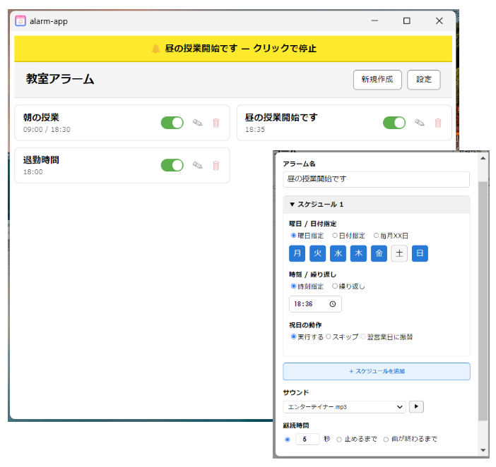
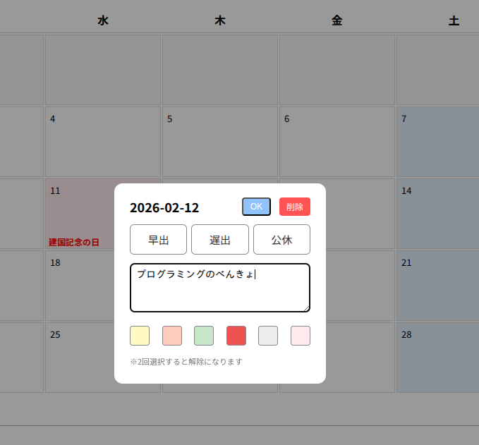
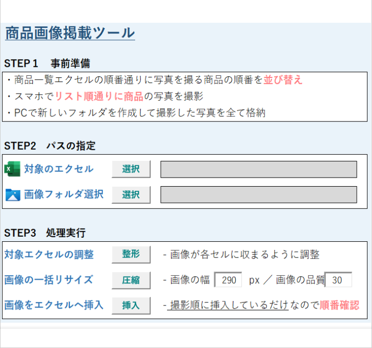
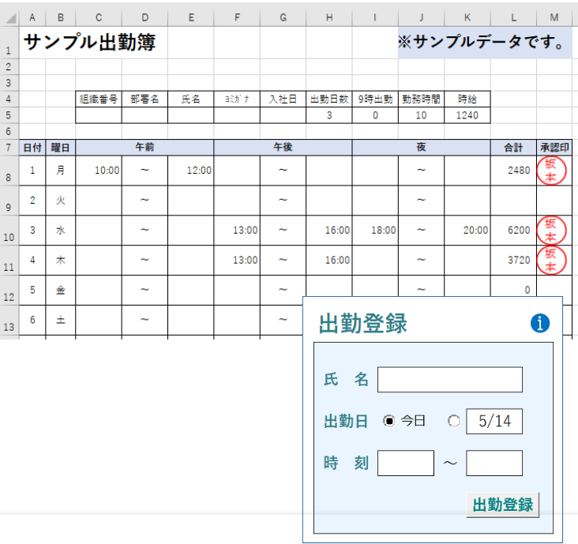
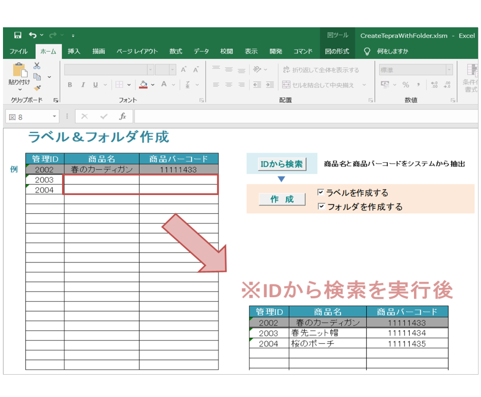
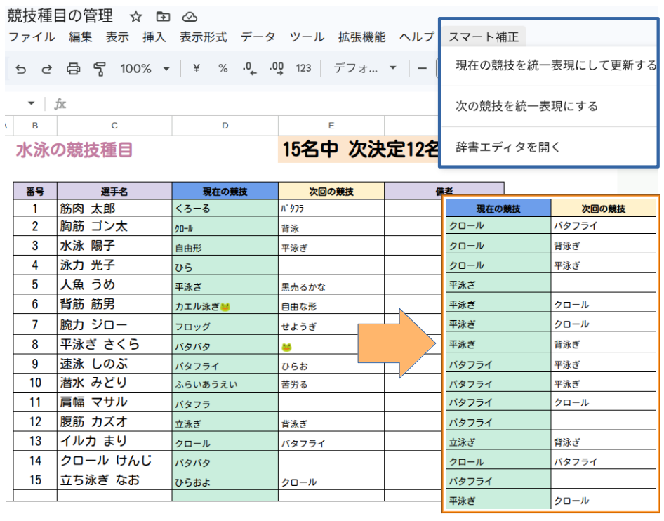
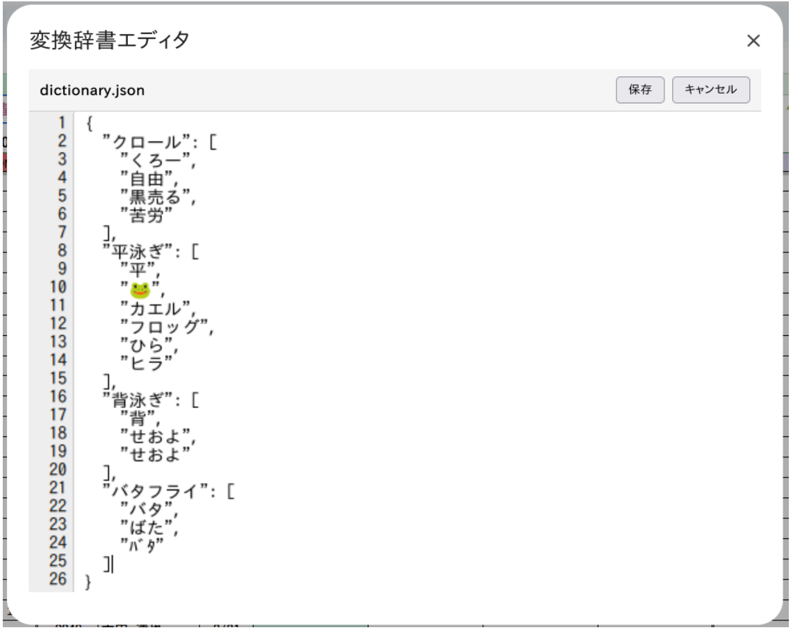

はじめまして、坂本有輝と申します。
現在はパソコン教室でインストラクターとして4年間勤務し、延べ1000名以上のサポートをしてきました。
パソコンの基本操作からVBAを用いた業務改善の提案なども行い、ユーザー視点で物事を捉える力と改善提案、コミュニケーション力を磨いてきました。
事務作業では、Excel VBAやGoogle Apps Scriptを用いた業務改善に取り組んできました。
マクロの記録でVLOOKUPを自動化するところから始まり、for文、辞書など、段階的にマクロを発展させてきました。
作業時間の短縮やヒューマンエラーを削減し、現場の効率化に貢献してきました。
以前には C++ を用いた Windows アプリケーション開発にも携わり、期間として1年ほどの新人経験ではありますが、
機能改修や不具合修正などの保守業務を通して開発の基礎に触れたこともあります。
現在はJavaScriptやReactを中心に学習を進めており、
OSを問わず動作するWebアプリケーションの可能性に強く魅力を感じています。Reactを用いたアプリケーションも制作し、GitHubに公開しています。Copilotに助けられながらではありますが、アプリとして仕上げるところまで取り組みました。
Webエンジニアとして未経験ですが、これまでの経験と学んだ技術を組み合わせ、ユーザーの役に立つアプリケーションを作れるエンジニアを目指しています。
分からないことはまだまだ多いですが、いちから積み上げていく覚悟です。

ReactとElectronを用いて作成した常駐型アラームアプリ。 入力UXの改善や通知ロジックの安定性にこだわり、実用レベルまで仕上げました。 意外とアラーム継続時間を指定できるアプリがないので制作してみました。

React Hooks を用いて作成したカレンダーアプリ。 シンプルなUIと操作性を意識し、日付管理や状態管理を実装しました。 Supabaseを用いてデータベース連携も行い、vercelにデプロイして公開。

WIA を用いて画像を一括圧縮＆エクセルに挿入するツール。大量画像の処理時間を大幅に短縮し、 現場の作業効率化に貢献しました。

マウス操作だけで完結する勤怠登録画面から、集計、電子印鑑の一括押印・PDF出力までを実装した総合ツール。現場の勤怠管理業務の効率化に大きく貢献しました。

テプラのAPIを用いて、Excelから印刷するツール。SendKeysを用いたスクレイピングにも対応し、社内システムから印刷したい項目を取得可能。 大量のラベル印刷作業を効率化に寄与しました。
上記以外にも、業務の効率化に寄与するVBAツールを多数作成してきました。

JSONファイルを読み込み、表記揺れを統一する名寄せツール。 ワイルドカードを用いて、データ整形の効率化に役立ちました。 ピボットテーブルでの集計精度を向上させることができました。

Googleドライブ上ではJSONファイルを直接編集することができないため、 JSONエディタをスプレッドシート上にモーダル実装。 今後の更新にも動的に対応できます。